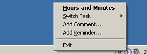

Hours and Minutes Tour
After an initial task has been selected, Hours and Minutes place itself in the system tray (the area at the right bottom of your start menu).

To access it's features, rightclick on the icon to bring up a quick-menu, or simply doubleclick to bring up the main window.